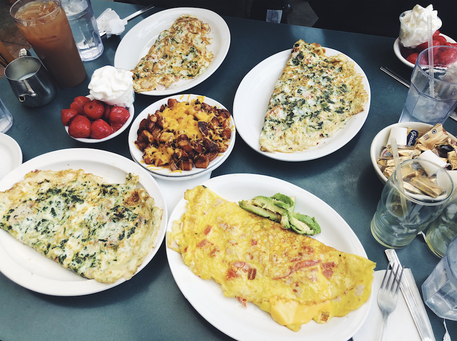
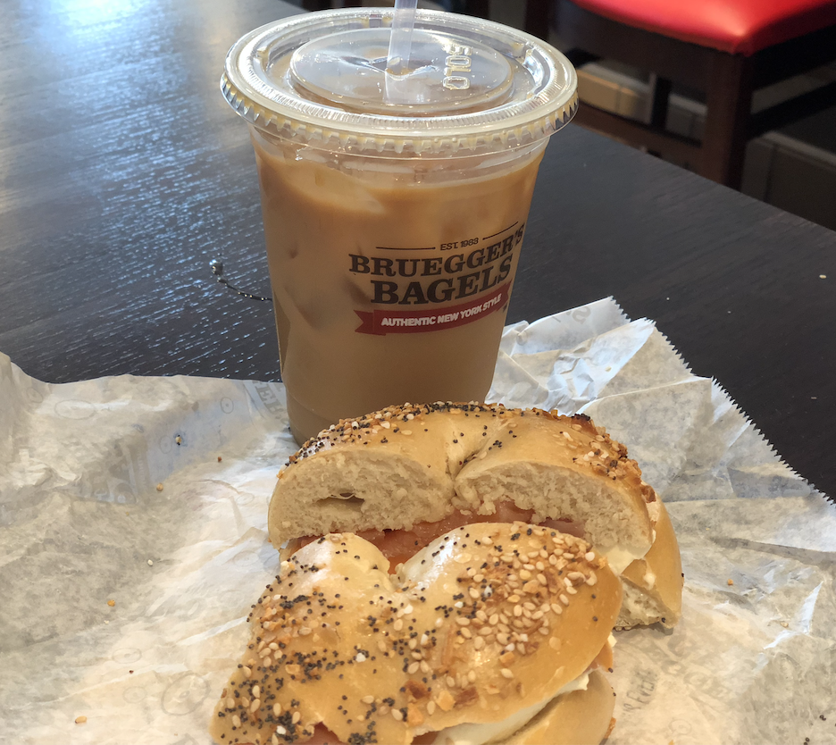
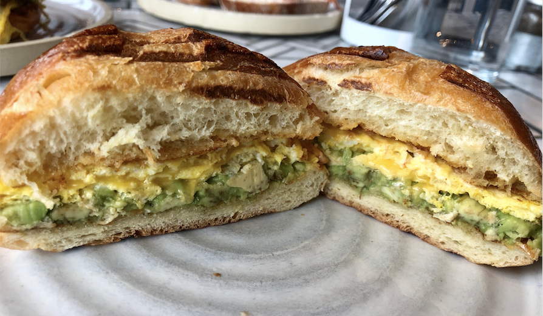

Angelos:
Angelos is my favorite breakfast resturant. It has been an Ann Arbor staple since 1956. Their raisn toast is made in-house and is a must try. Additionally their omelettes are amazing. The omelette contains 3 eggs and a choice of 4 add-ins free of charge. Heres some of my creations.

Brueggers Bagels:
Brueggers Bagels is a chain resturant.Although it is all over the nation, it is still delicious. The iced coffee here is fantastic too. If you need a nice fluffy New York type bagel in Ann Arbor, here it is!

Wilmas:
Lastly, Wilmas is always a great option. They are a healthy place focused on good food. The Egg Sandwhich is my favorite breakfast item there, but they also have amaizng brunch items too!
